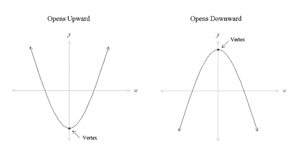
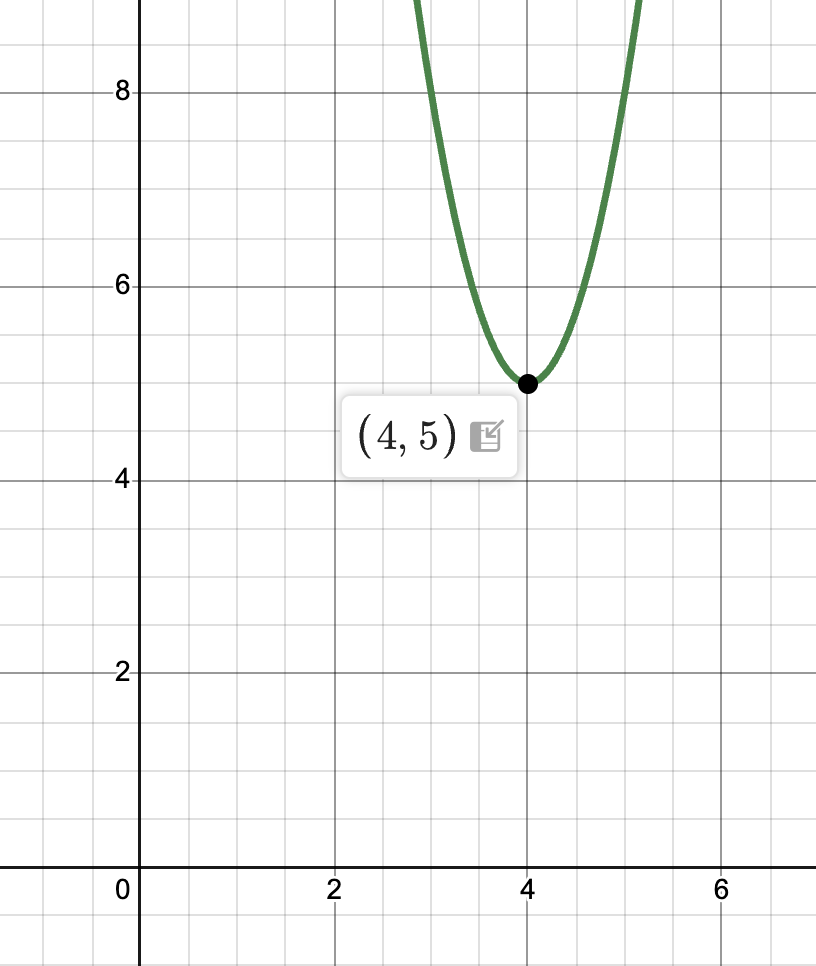
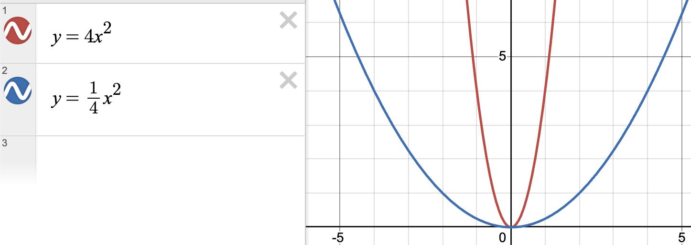

A quadratic is a polynomial whose degree is exactly 2.
When graphed, they will always follow the shape of a parabolic arc or curve. For example,

Quadratics can be represented in three distinct mathematical structures.
This is likely the one you have seen the most at this point, and can be represented by the general form
f(x) = ax2 + bx + c.
For example
f(x) = x2 + 3x + 5.
This form features terms with coefficients (a, b and c) separated by addition or subtraction, like in the example above - note that the x2 term must exist, otherwise the degree wouldn't be 2, and thus a ≠ 0. It also has terms that must be in descending degree order, and thus in the case of a quadratic the leading term with a degree of 2 must go at the front of the function, followed by the term with a degree 1 if needed and the term with no degree/constant if needed.
Standard form can be used for all polynomials of all degrees, but let's not go too deep into that!
This is much more exclusive to quadratics, and can be represented by the general form
f(x) = a(x - h)2 + k,
where (h, k) is the vertex of the quadratic.
For example
f(x) = 3(x - 4)2 + 5.
If we were to graph that, it would look something like

Notice that from our general form, we should have a vertex at (4, 5), and this is true in the highlighted point on the graph.
This can again be used for all polynomials of different degrees, but is most commonly used for quadratics. It can be represented by the general form
f(x) = a(x - p)(x - q),
where p and q are the solutions of the function.
For example
f(x) = 3(x - 4)(x - 5).
Now, you might be panicking, saying (cue the high-pitched squealing)
but, but, where is the degree of 2?
That's a good observation. But now I want you to try and expand it out so there are no more parantheses visible. So,
f(x) = 3(x2 - 9x + 20), thus
f(x) = 3x2 - 27x + 60.
And look at that, the degree of 2 came back! This happens because factored form is just a more compact form that allows us to see the solutions of the quadratic function, but the quadratic part of the function still exists.
Notice how each of these three forms all have an a value. This dictates the overall shape of the parabolic graph. Talking about signage, if the a value is positive, then the graph will open upwards, as shown in the image at the top of the page. If the a value is negative, the graph will open downwards, as shown in the same image.
Additionally, the magnitude of the a value also determines the apparent "width" of the parabola. The larger the value gets, the narrower the graph becomes, and the closer to 0 the a value gets, the wider the graph becomes. Take a look at the images below to illustrate what I mean.
